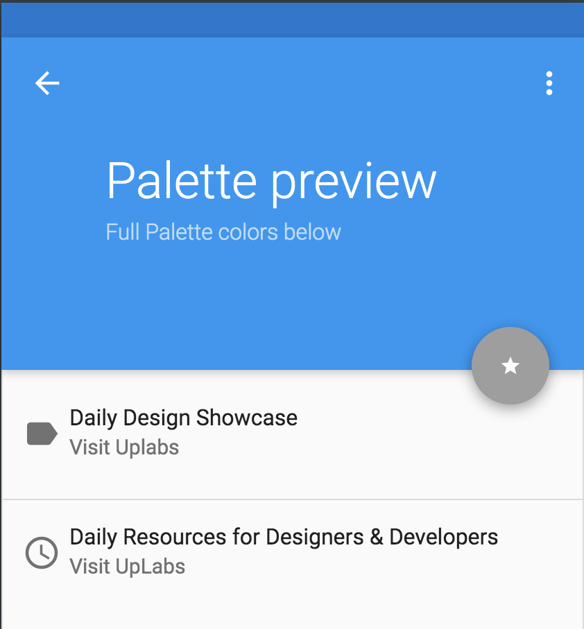

Community Draft
The current document was built as a documentation for the Ideal Timing project, which is intended for the Human-Computer Interaction university subject.
Develop a multi-device adaptive and customizable tool – i.e. a (mobile) Web browser extension – able to determine (e.g., learn) and recommend the ideal weekday and time for performing a set of desired actions in a specific context. For example, sending an important e-mail message to the co-workers, updating a Web site in order to increase the number of possible visitors and/or customers, committing the source-code only if a given module was not updated in the last W weeks, etc.
Based on the description above, we chose to build a mobile application which recommends this ideal time for some specific scenarios. These scenarios were found to be more occurent in our every day life and our scope is to help people in need in an efficient and simple manner.
A color is very important for a product's branding, being the first thing the user unconciously notices. We decided on the colors based on the Material Palette which is perfect for a mobile app because as it can be seen below, it suggests other colors which are in harmony with the primary and the accent colors chosen by us. In the study of Color Psychology, blue inspires trust, draws attention, suggests precision and stimulates productivity. These are the attributes we would like to be asocciated with, so that our users can find in IdeaT a quality, reliable and safe product. Popular technology brands such as Facebook, Twitter and Skype also use blue in their branding to make people want to use their software daily. The grey accent color associates with a timeless manner, because it is our job to help the people not be stressed by time anymore and leave that to us. Apple uses this as the main color to inspire elegance and practicability.
For Fonts, we used what Google Fonts offered us and picked Roboto Condensed as our primary font. It is widely used in mobile and especially Android applications so the user is already familiar with it and this will make it much easier to convert to our app. It allows the letters to be settled into their natural width, with some friendly and rounded features, while its geometric feel focuses on the practical side. As suggested by Google, the Condensed family can be used alongside the normal Roboto family and the Roboto Slab family.
We thought of a simple, easy-to-remember logo but which makes the user grasp the concept of the app really fast. Its focus is on timing, finding the right moment when an action should be done to get the best results. The "I" letter in the middle is similar to the hand of a clock and we wanted to use the colors and fonts mentioned above.
Our main ideas were based on the need of a Recruiter, which has difficulty in getting responses from employees and applications for a job. As the saying goes, "timing is everything", so an application which takes care of recommending the ideal time when a job description should be sent (for example, when as many people as possible are online) would help this kind of person a lot. The user only has to login in the desired platform, insert the text and accept the time suggested by the app. He/She can also edit the date and hour if needed. The app takes care of the rest.
The second idea is focused on the images, which nowadays are more easily spread through social medias if there is activity on it, such as liking, sharing, reacting and so on. Therefore, timing also is very important in this case for advertisement. Continuing with our story, if our Recruiter decides to change the cover or profile picture, it needs to be at a favourable time when most users are online. This feature is also very useful for people who use social medias very often and also whose job depends on how many viewers or fans they have, hence the secondary persona we identified - the Influencer type.
The third idea is a frequent problem especially in our IT workplaces. A lot of emails the employees receive are not being read because of various reasons: they are away for lunch break, in a very important meeting with the customer, in a passionate discussion with their colleagues, working on some story which needs a lot of concentration and so on. Our Recruiter has the complex task of finding the right time for everyone so at least some of the receivers are in the mood of replying to the email. By automating this, he/she can focus on the work she was actually trained to do and studied for and leave the calculus in the hands of our application.
While deciding on a design for the Android application, we used mobile design patterns such as: